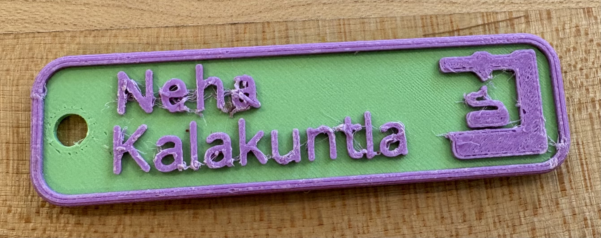
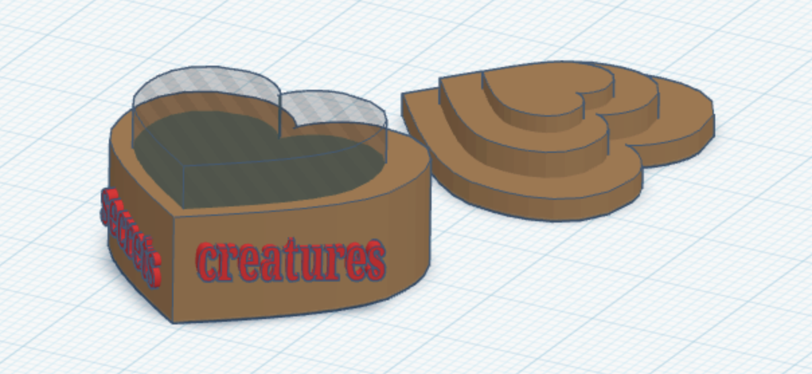
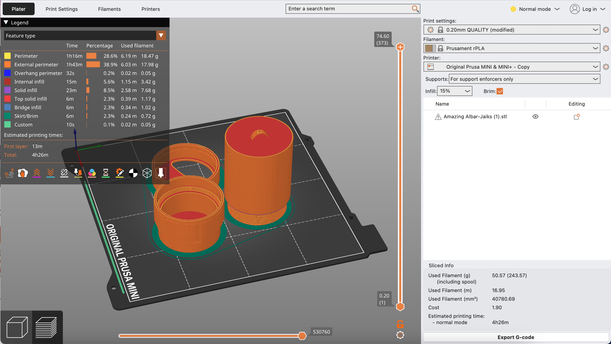

Project 1: Introduction to 3D Printing
Part 1: Nametag
I would consider this print successful, although there are noticeable flaws. It came out legible which is the most important element, but there were noticeable flaws. Mainly I had problems with some stringing that I had to clip off afterward. It’s not the cleanest result but it still serves its purpose. I think if I scaled it up a little then this problem would not be a concern. If I did this again I would also slow down the print speed for cleaner edges, and polish or paint the surface for a more clean appearance.
Part 2: Calibration (“torture”) print
I believe this print went very well, and I'm satisfied enough with the final outcome that it is by far my favorite. I really love the "furry" texture that came out around its ears! These "mini strings" add a great unintended detail. The details turned out really nicely, and the printer handled the overhangs impressively well. The bridges were a little rough, but overall, this was a successful calibration print.
Part 3: Open-source assistive devices
This print had more challenges. It is supposed to be a light switch extender for people with limited mobility. Unfortunately, some of the supports collapsed inside during printing, leaving it unusable.In the pictures you can see how it will not be able to fit onto a light switch. If I were to print it again, I would increase its size and make supports easier to remove. Despite the failure, it’s a valuable prototype that shows how accessibility and design can work together.


Project 2: Creating & Remixing 3D Designs
CAD Orientation
My goal in the first step was to understand both Tinkercad and Fusion 360 through tutorials and simple models.I have completed the personal portfolio to the extent that it meets all of the requirements, but I still feel like I can add more, and this is not the ultimate representation of how much I have learned in both of these CAD software programs. I feel like I am now very familiar with how to use Tinkercad, and it is very easy to use; however, I also think I have reached the limits of its power. It falls short if I am envisioning something specific in my head to create because I don’t have much control over the details. I still think it is useful if I do not have a certain end goal in place because just playing around with the applications available offers enough creativity that I am able to create something new. For example, I wanted to curve the edges of the little heart box I made, but no feature in Tinkercad allows the user to do that. After I finished the heart box, I downloaded Fusion, and already I was facing a torrential downpour of problems, with only the download process, because apparently I had downloaded it before and it said I signed in too many times already, and it would not recognize the educational account, and though I had access I am still getting a countdown in Fusion about how many days I have left before it expires. Hopefully, I can figure this out before it expires and lose access to Fusion again. We will see soon… Once I got into Fusion, it was tricky to learn how to maneuver inside the program, and I was especially confused with the timeline feature as well as seeing the bodies and sketches on the left. I had to restart multiple times because everything got so cluttered and it became unusable. Although I was able to successfully achieve my goals in Fusion (to a satisfactory extent), it took me much longer than it probably should have because I wanted to actually understand how everything worked, so I was googling all of the features, watching tutorials, and trying to figure out how everything fit in with everything else. Even when I figured out one feature, it would not work when I combined it with another feature; this cost me a lot of time as I genuinely want to learn how to navigate the program. I was also frustrated with the controls at times. I spent over two hours just trying to figure out how to pan without a mouse in a more efficient way than clicking on the hand icon, because in Tinkercad, you can pan by just clicking ‘shift’ while using two fingers on the trackpad. I was searching for how to change the keybinds but eventually concluded that there was no possible way to do this in a user-friendly way without using a mouse. I am not a mouse user and can never use a mouse in my daily work because the way I sit does not allow for it, and I do not want to carry another whole object around, so for me, this was extremely frustrating and unproductive. I am still extremely irritated every time I'm using Fusion, so this is going to be a big problem for me going forward with assignments. Though Fusion has a massive amount of features and controls, I still cannot achieve exactly what I want, so it feels like I am overwhelmed with options that are intended to make it easier to get what I want, but are instead incomprehensible to use, and my vision still cannot be met. I spend so much time trying to figure out how to do something because it is hard to accomplish even the simple stuff (let alone specific details I want). So it would literally be better if it were less powerful in exchange for user-friendliness, but not all the way down to the level of Tinkercad, where I can barely do anything. I could just go on and on about how much more time it takes to do something extremely simple because it feels like I am fighting against Fusion to do what I want, and it is sooo draining; so that means that the time I waste using it is even higher when you take into account how I am less productive throughout the rest of the day.
Design Research and Planning
This is the 3D model I chose to remix:
This is my concept sketch for modifying it:
Tinkercad Remix
I encountered multiple failed prints at first. The eventual successful one was a 4-hour print completed in the MakerLab. The issues seemed related to bed adhesion since earlier attempts failed early in the print. Whhen I altered a gap between components and improved stability.
Fusion Remix
This print completed successfully but required extra post-processing. Although it printed cleanly, the tradeoff was an excess of generated supports and removing them took around 30 minutes. I also had to sand down the sides to make the twisting mechanism work smoothly, which ultimately resulted in a functional model.
Project 3: Form and Fit for Electronics
Assembly
Design and 3D Print an Enclosure
Design and Laser Cut an Enclosure